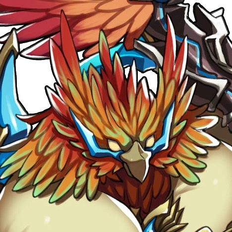

Roc

In Xenoblade Chronicles 2, Roc is a Special Legendary Blade. He has the ability to give his driver Vandham and his supporters a great deal of strength. He harnesses wind power. He uses twin scythes to battle and is an anthropomorphic bird.
Quotes
"You deserve part of the credit, isn't that right, mate?"
---
"Better a bird and a dog than a cat and a mouse, certainly."